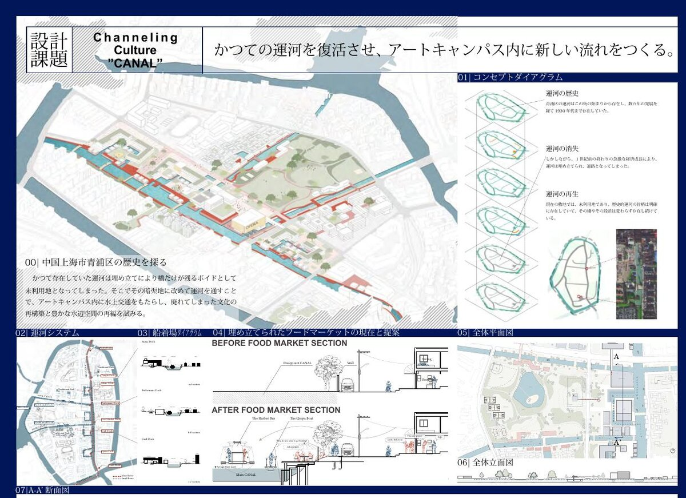
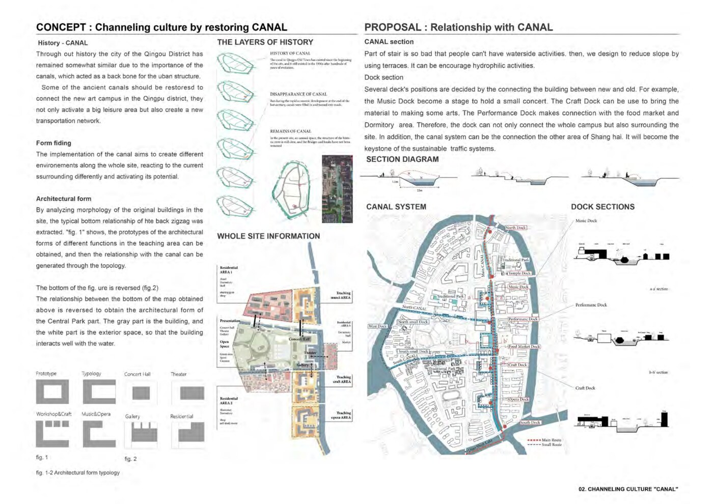
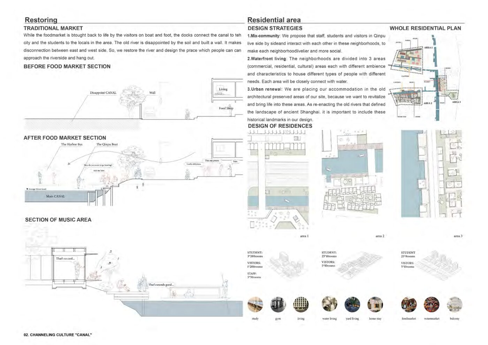
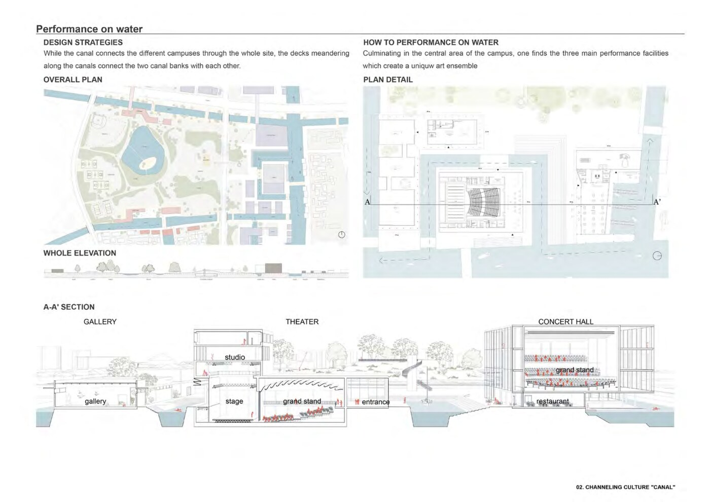

This project designs an Art Academic Park Campus as if creating a new island within the island. It is a group design project with 6 members: 3 Tokyo Tech students and 3 Chinese students, developed over an intensive 2-week workshop in Shanghai.
本プロジェクトは、島の中に新しい島をつくるようにアートアカデミックパークキャンパスを設計する。東京工業大学3名と中国人学生3名の計6名によるグループ設計を、上海での集中2週間ワークショップで行った。
The canal in Qingpu Old Town has existed since the beginning of the city, and persisted through hundreds of years of evolution into the 1930s. During rapid economic development at the end of the last century, canals were filled in and turned into roads. In the present site — an unused space — the structure of the historic river is still clear: bridges and banks have not been removed, leaving only voids where water once flowed.
青浦区の運河はこの街の始まりから存在し、数百年の発展を経て1930年代まで存在していた。しかし急激な経済成長により運河は埋め立てられ道路に。現在の敷地は未利用地であり、歴史的運河の骨格は橋と段差として明確に残存している。
The design operates through three moves: Restoring the main canal axis connecting inside and outside the site; Connecting Dimensions by layering dock sections, public terraces, and canals; and Creating Surfaces — new ground planes dissolving the boundary between canal and campus. The decks meander along the canals so that both banks are connected to each other throughout the whole site.
設計は三操作で構成。運河の復元：敷地内外をつなぐ主軸運河と枝運河を再生。次元の接続：船着場断面・テラス・運河を重ね合わせる。面の創出：運河とキャンパスの境界を溶かす新たな地面。デッキは運河に沿って蛇行し、敷地全体を通じて両岸を繋ぐ。
Culminating in the central area of the campus, three main performance facilities — Gallery, Theater, and Concert Hall — create a unique art ensemble. While the canal connects the different campuses through the whole site, the decks meandering along the canals connect the two canal banks with each other.
キャンパス中央部には、ギャラリー・劇場・コンサートホールの三つの主要パフォーマンス施設が集まり、独自のアートアンサンブルを形成する。運河が敷地全体の各キャンパスを繋ぐ一方、デッキが蛇行しながら両岸を結ぶ。

Canal history diagrams and design strategy運河の歴史ダイアグラムと設計戦略

Canal dock sections and landscape plan船着場断面と景観計画

Overall plan, elevation and A-A' section — Gallery / Theater / Concert Hall全体計画・立面・A-A'断面 — ギャラリー / 劇場 / コンサートホール